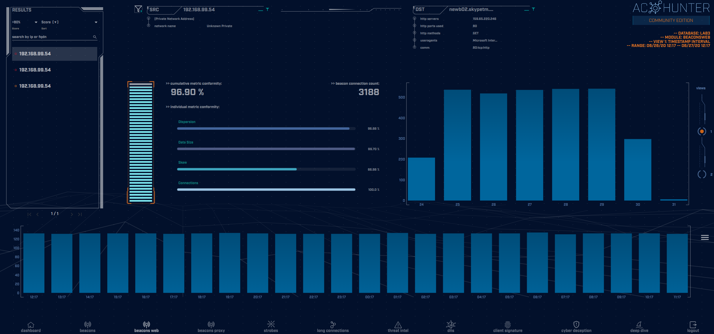
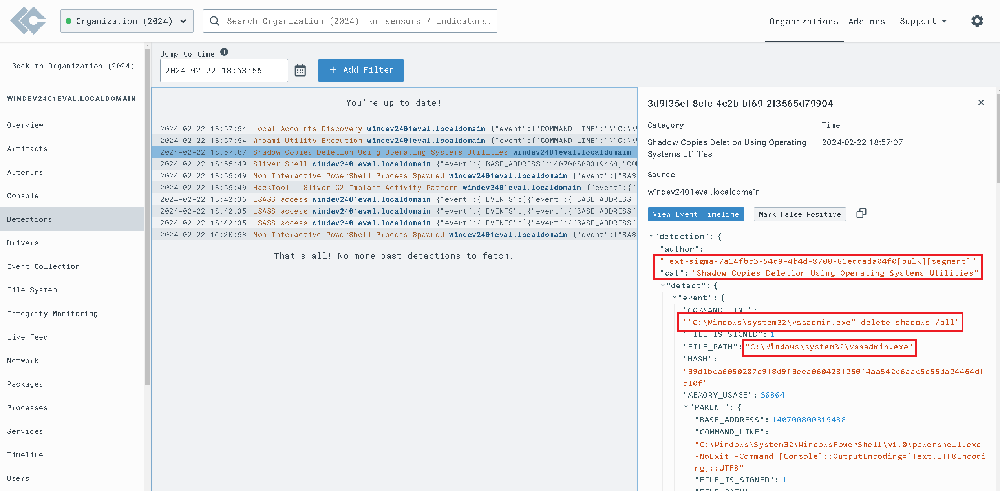
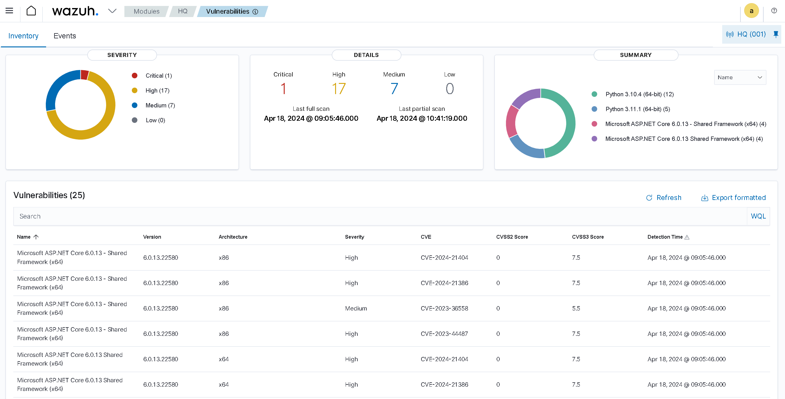

Deployed and configured Security Onion on VMware Workstation Pro, leveraging Security Onion
Console, Network Miner, Wireshark, MITRE ATT&CK, and Virus Total for malware traffic analysis
and threat hunting. Investigated alerts, identified malicious traffic, extracted Indicators of
Compromise (IOCs), and pinpointed infected hosts in Windows Active Directory, culminating in a
comprehensive incident report.

Leveraging Active Countermeasures' AC-Hunter to proactively search for and identify
potential security threats and adversaries within an organization's
network infrastructure. Unlike traditional measures that rely on
automated security tools to detect known threats, threat hunting involves human-driven
analysis to uncover unknown threats that may evade detection by
automated systems.

In this project, I configure a home lab environment featuring an Ubuntu Server VM and a
vulnerable Windows 11 VM using VMware. With a LimaCharlie EDR agent
installed on the victim endpoint, I generate attack telemetry using offensive tools like Sliver
C2 on Ubuntu Server, observe the telemetry in the LimaCharlie web interface, and
craft and fine-tune detection and response rules to effectively identify and respond to
malicious activity.

Deployed and configured Wazuh to enhance security across my home network. Leveraged Wazuh’s
comprehensive security capabilities to implement incident detection and response, vulnerability
management, file integrity monitoring, and system hardening aligned with CIS Critical Security
Controls.

Established a Microsoft Sentinel SIEM lab using Azure VMs and Log Analytics Workspace, connecting
it to a Windows 10 VM serving as a honeypot for actively monitoring incoming global RDP Brute
Force attacks. Developed a PowerShell script leveraging the geolocation.io API to perform
geolocation lookups on attackers, enhancing threat intelligence and mapping capabilities within
Sentinel.

Demonstrated effective vulnerability management by leveraging Nessus Essentials to perform a
credentialed scan and identified and remediated 156 Critical and High vulnerabilities in a
Windows 10 VM, highlighting proficiency in identifying and remediating security risks in
controlled environments.

Authored comprehensive installation guides for Kali Linux, Kali Purple, and Metasploitable
virtual machines, tailored for Oracle VirtualBox and VMWare Workstation Pro platforms,
facilitating streamlined setup and configuration processes for cybersecurity enthusiasts.